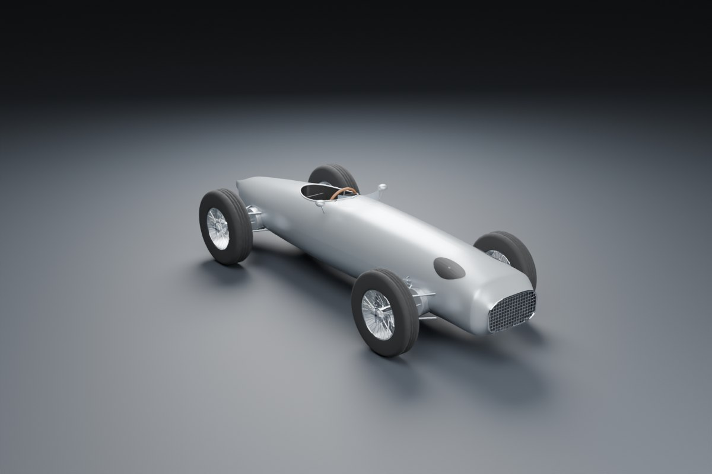

Exhibit 01 · The 2026 Formula 1 car
The fastest circuit racer on Earth, taken apart
A Formula 1 car is a single-seat racer built to a rule book written by the FIA, the sport's governing body. It weighs less than a family hatchback, yet produces around 1,000 horsepower. Turn it around, take it apart, and tap any piece to learn what it does.
This browser could not start 3D graphics (WebGL). Every part is still described in the list on the right.
A study model built to the 2026 rules from public photographs; it is not any team's car. Overall size follows published 2026 launch figures: about 5.44 m long, 1.90 m wide and 0.98 m high, with the 3.40 m wheelbase at the rule limit. Sections and hidden systems remain estimates; this is not manufacturing CAD.
How the car uses air
Pressed to the road by the wind
An F1 car grips the track with its tyres, but at speed most of its grip comes from the air. The wings and floor push the car down, the same way an aeroplane wing lifts a plane up. This push is called downforce.
Downforce has a price: drag, the air resistance that slows the car on the straights. Every design is a trade between the two. For 2026 the rule makers cut downforce by about 30% and drag by about 55%, and gave the cars wings that change shape on the move.1
Exhibit 02a
A wing, turned upside down
Air travelling under the curved lower surface has further to go, so it speeds up and its pressure drops. Higher pressure on top pushes the wing down. In Corner mode the flap is steep for maximum grip. In Straight mode it lies flat, like closing a parachute, so the car accelerates harder. In 2026 every car may use Straight mode in marked zones, replacing the old DRS.27
Exhibit 02b
The floor that sucks
The underside of the car works like a Venturi tube. Squeezing the air into a narrow gap above the road makes it speed up, so pressure under the car falls and the car is sucked down. This is ground effect. The 2022–2025 cars used deep tunnels for strong suction; the 2026 floor is flatter, with a bigger diffuser, so the effect is weaker.7
The 2026 rule book
Smaller, lighter, more electric
| Measure | 2026 value | What it means |
|---|---|---|
| Wheelbase (max) | 3,400 mm11 ft 2 in | 200 mm shorter than before.13 |
| Body width (max) | 1,900 mm6 ft 3 in | No bodywork more than 950 mm from the centreline, tyres excepted. 100 mm narrower.13 |
| Floor width | −150 mm | Narrower than the previous generation.1 |
| Minimum weight | 768 kg1,693 lb | Car plus driver, including about 46 kg for the tyres. The 2025 limit was 800 kg.16 |
| Wheel rims | 18 in | Unchanged from 2022–2025.111 |
| Front tyre | 280 × 705 mm11.0 × 27.8 in | Width × diameter. 25 mm narrower.1113 |
| Rear tyre | 375 × 710 mm14.8 × 28.0 in | 30 mm narrower.1113 |
| Overall length | ≈ 5.2–5.6 m | No single maximum in the rules; this is the typical range. UNVERIFIED3 |
| Ride height | Not published | Each team's secret. A wear plank under the floor stops cars running too low.47 |
UNVERIFIED Tyre diameter change. Pirelli says 15 mm smaller front and 10 mm rear; one Formula1.com article says 15 mm and 30 mm. This page uses Pirelli's absolute sizes.117
UNVERIFIED Weight baseline. The FIA compared 768 kg with 2022 cars (30 kg lighter); Formula1.com compares it with 800 kg in 2025.16
Smaller and lighter
Shorter, narrower, on slimmer tyres, and 32 kg lighter than 2025: a nimbler car that leaves room to race side by side.16
Wings that move
Active aerodynamics: front and rear flaps switch between a grippy Corner mode and a slippery Straight mode.27
Flatter floor
The deep tunnels of 2022–2025 are gone. Less suction, a larger diffuser.7
No beam wing
The small second wing below the rear wing is banned, and endplates are simpler.1
Bargeboards return
Front wheel covers are gone. Small bargeboards steer messy air from the front wheels inward.6
Exhibit 04 · The era garage
Seventy-six years of shape
Twelve study models, one for each era of Formula 1, all built at the same scale. Switch on the 2026 outline to see how much the cars have grown, and how the rules kept reshaping them.
Each era has a study model of a typical car of its time, rebuilt from public reference material. None represents a specific team's car. Unmeasured dimensions and sections are estimates.

3D is unavailable. Try again or choose another car.
Where they race
Every track is different
A Formula 1 circuit is a closed road built, or borrowed, for racing. Some are purpose-built permanent tracks; others are street circuits laid out on city roads for one weekend; a few run through parks.
Every track asks something different of the car. Fast tracks like Monza want little drag; twisty ones like Monaco want as much downforce as possible. Below, pick one of four circuits and watch speed, wings and battery change through one lap. Monza, Monaco and Silverstone use speeds derived from real 2026 qualifying laps.
Exhibit 05 · One lap, four circuits
Corner speeds, gears and Straight Mode zones for Monza, Monaco and Silverstone are rounded figures derived from one 2026 qualifying lap each (F1 live timing via FastF1, unofficial) and the FIA 2026 circuit maps. Sepang is simulated with a simplified physics model using typical F1 grip, braking and power figures, so its values are illustrative. Track shapes come from the open bacinger/f1-circuits dataset (MIT licence).29303132
Speed
Gear
Driver
Full throttle
Wings
Corner mode
Battery
Deploying
Lap time
0.0 s
Next corner
Track characters
What makes some circuits special.
Race calendar
Race dates change every season, so this page doesn't keep a copy. For the latest schedule, start times and results, see the official Formula 1 site.
Engines and power units
From straight-eights to 50/50 hybrids
The "engine" is now a power unit: a petrol engine plus an electric motor, a battery and the computers that run them.
Engine rules changed more than anything else in F1's history: supercharged eights, tiny 1.5-litre engines, 1,000-horsepower turbos, screaming V10s, and now hybrids that recover energy every time the driver brakes.
Peak power by era
Approximate horsepower, drawn to one scale. Older figures are estimates and sources vary.
The full comparison
| Years | Size | Cylinders | Turbo | Max RPM | Approx. power | Hybrid parts | Fuel rules | Makers | Sound |
|---|
Who builds the 2026 power units
Five manufacturers supply eleven teams.81415
UNVERIFIED In June 2024 the FIA listed six committed manufacturers including Alpine; Alpine instead races 2026 as a Mercedes customer.18 Cadillac starts with Ferrari units; General Motors plans its own unit later, year still to confirm.1514
How braking becomes speed
"Hybrid" means the car has a petrol engine and an electric motor that can both charge a battery and push the car. A city bus that charges as it slows for a stop, then uses that charge to pull away, works the same way, only far more gently.
The fuel
Since 2026 every car runs on 100% advanced sustainable fuel: made from sources such as non-food plants, household waste or carbon captured from the air, and certified so no new fossil carbon goes into the tank. It is a "drop-in" fuel, so it works in a normal petrol engine without redesigning how it burns.18
The 2026 grid
Eleven teams, twenty-two drivers
There is one more team than in 2025: Cadillac joined, and Audi took over the Sauber team. Every team designs and builds its own car body (the chassis). Some also build their own power unit; others buy one, like a small airline buying jet engines from Rolls-Royce.34
The company that designs and builds the car.
A 1.6-litre turbo petrol engine plus an electric motor and battery.
Where the car is made. Most are around Oxford in England.
The yearly title for the best team, adding both cars' points.
Team names appear as text; without team logos or sponsor graphics. Title counts follow the listed references; Williams is corrected to nine using the team’s official archive. Checked 2026-10-18.343536
Head to head
How fast is an F1 car, really?
Put a 2026 F1 car next to a family car, a supercar, an airliner and a fighter jet. Pick a measure and see who wins.
Why does an F1 car only tie a supercar to 100 km/h, then leave it behind? Below 100 km/h the limit is traction (how much grip the rear tyres have before they spin), not power, and the supercar has four-wheel drive. Above that, the F1 car's double power-to-weight wins easily.
Launch: who reaches 200 km/h first?
Curves are illustrative fits through the published 0–100 and 0–200 times. The F1 figures are our estimate from 2026 race starts with full fuel, not an official number.303738
At 4 g, a 75 kg driver is thrown forward as if they weighed 300 kg.
At about 5 g, a driver's head and helmet, about 7 kg, pull sideways like 35 kg.
358 km/h is faster than most airliners need to take off (usually quoted as 250–290 km/h, unverified).
Pit stop game
Four tyres in two seconds
In a pit stop the driver leaves the track, drives down the pit lane, stops on the team's marks, gets four new tyres and drives off. There is no refuelling in a race, so a normal stop is only about tyres. Picture a car wash done by 20 people in two seconds.4750
How to play: once the car stops, press the button (or Space) for each step in order: lift, nuts off, nuts on, drop, release. Press too early and the crew fumbles, which costs time. Release while a car is passing in the fast lane and it's an unsafe release. McLaren's 2023 record is 1.80 s.48
Stationary time
0.00
Your steps
Sources and open questions
Where every number comes from
Every figure on this page links to one of these sources. Where sources disagree or a number is a team secret, the page says UNVERIFIED.